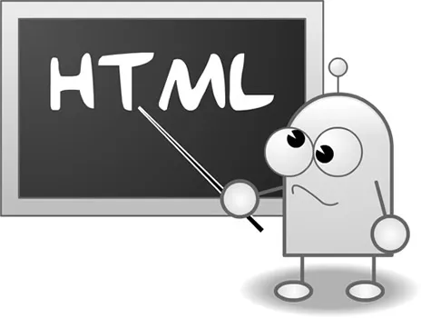

Recurso 1 - Fundamentos de HTML

Programación HTML: Imágenes. (2013, 9 marzo). Quobit. Recuperado de: https://www.quobit.mx/programacion-html-imagenes.html
Programación HTML: Imágenes. (2013, 9 marzo). Quobit. Recuperado de: https://www.quobit.mx/programacion-html-imagenes.html